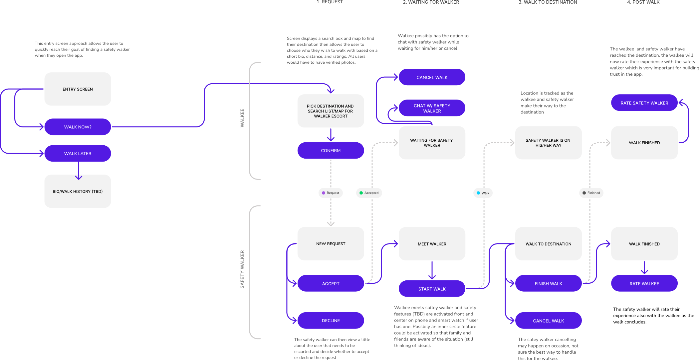
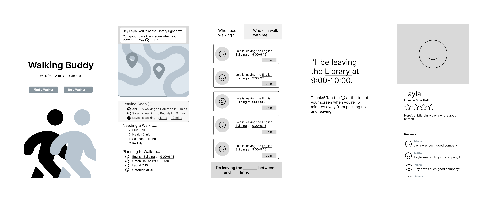
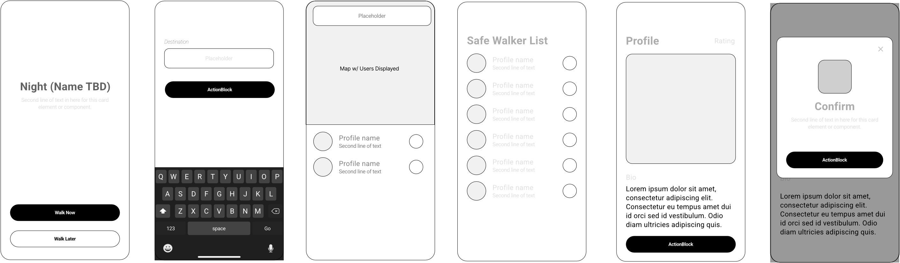

Designing an app to help reduce night time safety anxiety for young women.
Night safety app is geared toward young women, particularly in college. The app is designed to help users walk to their destinations while feeling more safe and secure. Whether walking to the library or the bar, NSA is designed to prevent and reduce night time harassment and assault crimes against women. This was a project for my second cohort in the Code Louisville Program. After a period of about 5 weeks, a team of 5, including myself, were able to get to the minimal viable product stage and plan to continue.
Team Roles and Responsibilities
Collaborative:
- Competitive Analysis
- User Research
- Empathy Mapping
- Personas
Individual:
- Userflow
- Wireframe
- Prototype (Low-Fidelity, Hign-Fidelity)
The Problem
Many young adults live alone, work late shifts, and leave bars or places of study late at night, leaving them no choice but to walk to their destinations alone. The chance of becoming an assault victim greatly increases when traveling alone during dark hours, and because of this, having to walk without accompaniment often results in fear, anxiety, and low confidence in nighttime safety for these young adults.
Who
Gen Z, Young Women
Though many women in general do not feel safe traveling around at night, to limit scope, we decided to focus on young, female college students. Young women in colllege are often in situations where they may have to walk to a location at night such as grabbing food, leaving the library, walking to or from a party, etc.
Scope and Constraints
2022 (5 weeks)
Remote Team of 5 Members
The main constraint was time as there was not a lot of time to vet users and do qualitative research. To add, there was little time to get much validation data.
Discovery: Let's Look at the Competition
Initially, the problem we focused on was young individuals in general feeling unsafe while walking to their destinations at night, which created a broad problem to solve. In order to limit the scope of the problem we used a Lean UX canvas. In the canvas, the team discussed who exactly we would be creating a product for. Questions came up such do we as a team want to focus on an individual or collaborative solution (parent and child), should we create a solution for multiple age groups or just one, and what are others in this niche doing to solve this issue. After discussing these questions, we then moved on to competitive analysis to further find the answers we sought.For our competitve analysis, we looked at existing solutions on what they did well and where their where gaps within the market where user needs weren't being met. Primarily, we focused on apps, physical devices, and hybrid solutions which utilized both apps and physical devices. Searching app store user reviews allowed us to quickly get customer feedback on potential competitor solutions. After gathering enough data, our next step was to hear from potential users directly by sending out a survey.
How do our users feel about sign-ups?
In our survey we wanted to understand user feelings around nighttime safety and existing safety devices. We asked about their night transit routines, what factors contributed to unsafe feelings, and what they usually did to help them feel safer. We surveyed over fifty people, and what was quite shocking, and sad, was that ¼ of our respondents said they feel unsafe almost every day, and over ¾ of them stated they feel unsafe at least one day a month. Even more shocking was that, once we grouped our respondents by gender, nearly ¼ of all women stated they feel unsafe almost every night and nearly 90% feel unsafe at least once a month. An alarming amount of female respondents (nearly 1 in 10) said they will not walk anywhere alone at ANY time.
Meet Camina and Ila
Due to time constraints, we created a proto-persona to represent our target user based on the insights gathered from the discovery phase. This proto-persona served as a basis for creating an empathy map and for making design decisions moving forward.
Empathy Map

Next, we did some group brainstorming. Using all of our findings from the discovery phase, we came up with some general ideas to what should be included in our night safety app and why. For our MVP, we focused on a couple key areas. First, we wanted to focus on users feeling safe about walking with other users by implementing a required verification system. Second, we wanted to let users be able to quickly and easily share their location with their inner circle or authorities at any moment. Third, we wanted users to have the ability to report any unsafe walk situation. Last, we thought that users should be able to quickly find each with features such as a location map similar to Lyft.
Ideation
Next, we did some group brainstorming. Using all of our findings from the discovery phase, we came up with some general ideas to what should be included in our night safety app and why. For our MVP, we focused on a couple key areas. First, we wanted to focus on users feeling safe about walking with other users by implementing a required verification system. Second, we wanted to let users be able to quickly and easily share their location with their inner circle or authorities at any moment. Third, we wanted users to have the ability to report any unsafe walk situation. Last, we thought that users should be able to quickly find each with features such as a location map similar to Lyft.
User Flow x Wireframe
We then took the ideas from the previous stage, went off individually, created our own userflows. Afterwards, we then compared what each team member came up with. To the left is the user flow I created. We wanted to develop a shared understanding for all team members on what we would be designing. Below is the initial wireframe by Natalya, a team member. My interpretation wireframe is below Natalya's as I designed after viewing hers. Here we have two different approach, one in which Natalya design a process for users to simply join an individual or group walking to the same common destination, which a great solution. When designing my wireframe however, I asked myself, what if someone has to go to a destination that isn't as popular or common? For this reason, I chose the Uber/Lyft model for my design. In the end, the team decided that a hybrid of the two approach would work best by keeping the design I created and implementing an alert and screen for users traveling to a common destination.
 Did our process work?
We set out, once again, to speak with our target users. This time, we shared some safety solutions we had envisioned for our walking app, then asked a series of questions. How long would they be willing to wait to be joined for a walk? Would they like the ability to see if a user was in fear or in need of a walk in an urgent situation? Would they be interested in allowing multiple users to join in on walks to a common location? And, how did they rank the importance of different features within the app? Many features would most certainly need a roadmap of some sort. For now, users how been able to view simple screen layouts and we are currently still getting feedback on the best direction to go in regarding information architecture and visual design.